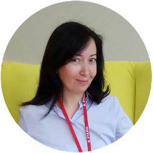

«Всегда радуюсь нашим встречам. После встреч, как после бизнес-тренера, психолога и литературоведа одновременно, хочется развиваться, не теряя ни минуты свободного времени и изменить свою жизнь прямо сейчас. В проекте собираются мыслящие люди, которые готовы выходить на новый уровень познания себя, окружающих, своего дела»
Анастасия Симонова, маркетолог«Всегда радуюсь нашим встречам. После встреч, как после бизнес-тренера, психолога и литературоведа одновременно, хочется развиваться, не теряя ни минуты свободного времени и изменить свою жизнь прямо сейчас. В проекте собираются мыслящие люди, которые готовы выходить на новый уровень познания себя, окружающих, своего дела»
 Анастасия Симонова, маркетолог«Всегда радуюсь нашим встречам. После встреч, как после бизнес-тренера, психолога и литературоведа одновременно, хочется развиваться, не теряя ни минуты свободного времени и изменить свою жизнь прямо сейчас. В проекте собираются мыслящие люди, которые готовы выходить на новый уровень познания себя, окружающих, своего дела»
Анастасия Симонова, маркетолог